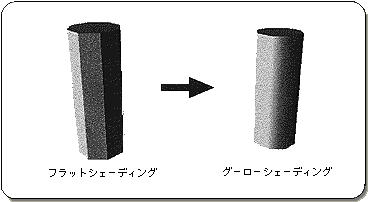
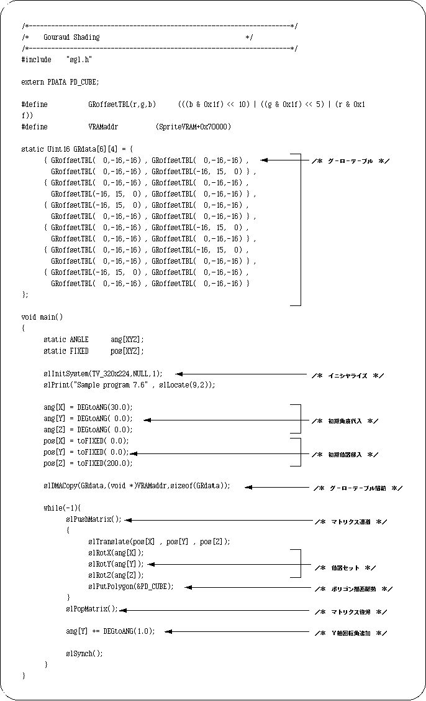
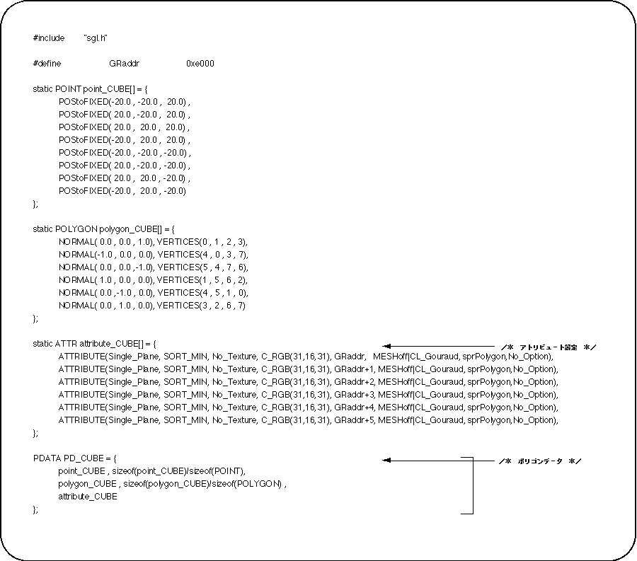

Return to previous page | Return to menu | Go to next page
The fifth parameter “Gouraud” specifies the Gouraud table used for Gouraud shading. Gouraud shading is a term for flat shading where the boundary between polygons is clear, and is a technique that makes a polygon look like a curved surface by applying a shading process to the polygon and removing the boundary between polygons. Sega Saturn achieves Gouraud shading by using the color gradation between the vertices of the polygon.

Let's take a look at a sample program (Listing 7-7). A cube with Gouraud shading rotates around the Y axis.

The routine itself for drawing and rotating the cube is not much different from the previous one, so I will not explain it. The difference is that line 41, the Gouraud table is being transferred to VRAM. The idea is the same as texture data transfer. First, all necessary tables are stored in VRAM.
Let's look at attributes next.

Pay attention to the attributes.
The fifth parameter “Gouraud” is set to the VRAM address that previously stored the gourd data. The VRAM address here is (relative address ÷ 8).
Note also the sixth parameter “Mode”.
If you want to use Gouraud shading, you must specify “CL_Gouraud” here.
When Gouraud shading is not used, specify the macro “No_Gouraud” for the fifth parameter “Gouraud”.